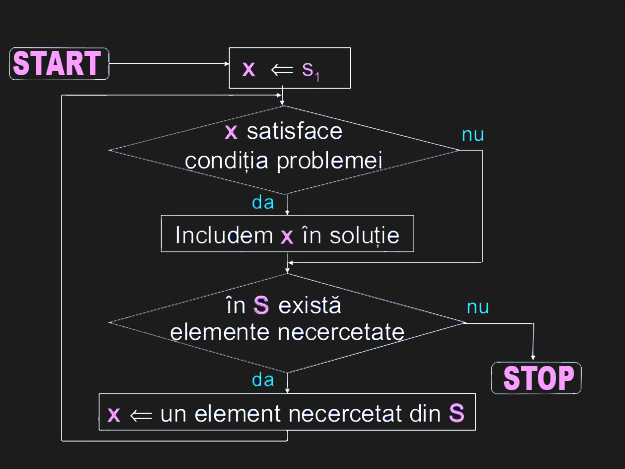

Este o metodă generală de elaborare a algoritmilor. În esenţă ea se aplică problemelor în care se dă o mulţime A conţinând n date de intrare cerându-se să se determine o submulţime B a sa care să îndeplinească anumite condiţii pentru a fi acceptată. Cum în general există mai multe astfel de mulţimi, se dă şi un criteriu conform căruia, dintre submulţimile acceptabile (numite soluţii posibile), se alege una singură (numită soluţie optimă) ca rezultat final.
O mulțime de candidați, din care se creează o soluție , apoi funcția de selecție alege cel mai bun candidat pentru a fi adăugat la soluție. O funcție de fezabilitate, care este folosită pentru a determina dacă un candidat poate fi utilizat pentru a contribui la o soluție, atribuindu-i o valoare unei soluții sau unei soluții parțiale ca mai apoi sa indice când s-a descoperit o soluție completă.
Putem face orice alegere pare mai bună pe moment și apoi se pot rezolva subproblemele care apar mai târziu. Alegerea făcută de către un algoritm greedy poate depinde de alegerile făcute până atunci, dar nu de viitoarele alegeri sau de toate soluțiile subproblemelor. El face iterativ o alegere greedy după alta, reducând fiecare problemă dată într-una mai mică. Cu alte cuvinte, un algoritm greedy nu își reconsideră alegerile. Aceasta este principala diferență față de programarea dinamică, care este exhaustivă găsește garantat soluția. După fiecare etapă, programarea dinamică ia decizii pe baza tuturor deciziilor luate în etapa anterioară, și poate reconsidera calea găsită în etapa algoritmică anterioară.
